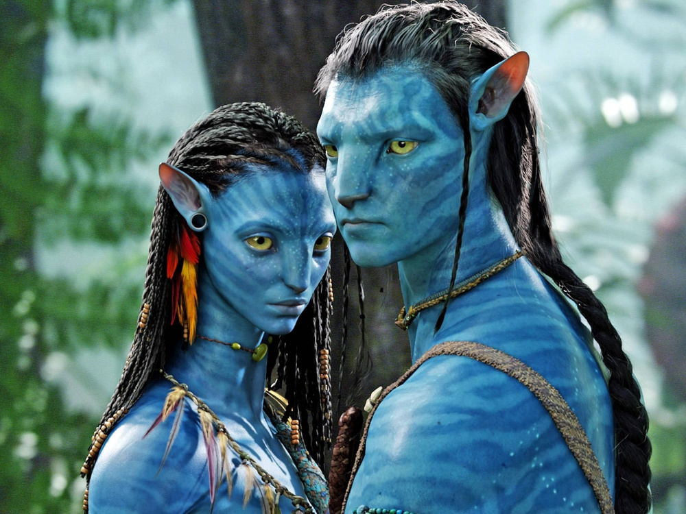

Кино современности
2000-е годы начались с резкой смены правил в киноиндустрии. Баланс сил изменился. Если раньше главными были киностудии, а потом главными стали режиссеры, то в 2000-х главными стали кинозвезды. Такие фильмы как "Гладиатор" 2000 г. с Расселом Кроу и "Эрин Брокович" 2000 г. с Джулией Робертс доказали, что характерный актер, имеющий статус звезды - это главный фактор успеха. 2002 год стал революционным и значимым в истории кинематографа. Оскар за лучшую мужскую роль получил афроамериканец Дензел Вашингтон, Оскар за лучшую женскую роль получила афроамериканка Холли Берри, а почетный Оскар получил еще один афроамериканец - актер Сидни Пуатье. В 2000-х неожиданно возродился интерес публики к жанру мюзикл. В 2000 г. вышел фильм "Почти знаменит", ставший одой рон-н-роллу. А в 2001 г. Баз Лурман создал шикарный музыкальный фильм с динамичными номерами и попсовыми песнями "Мулен Руж". Именно после успеха этой ленты у режиссеров появилась возможность создавать свои собственные мюзиклы, такие как "Чикаго" 2002 г., "Девушки мечты" 2006 г., "Мамма Миа!" 2008 г., "Ла-Ла Ленд" 2016 г. В свою очередь мультфильмы наоборот все больше стали отказываться от привычных музыкальных номеров в сюжет. Такие анимационные ленты как "Шрек" 2001 г., "Корпорация монстров" 2001 г., "ВАЛЛИ" 2008 г., "Суперсемейка" 2004 г., "Вверх" 2009 г. стали привлекать не только детей, но и взрослых. Они стали отражать реальные отношения людей, показывать настоящую жизнь. В 2000-х характерным стало появление дуальных героев. Такие ленты как "Нефть" 2007 г., "Банды Нью-Йорка" 2002 г., "Старикам тут не место" 2007 г., "Железная хватка" 2010 г. демонстрируют злых героев, которые одновременно отпугивают и привлекают зрителей. Зародился новый способ демонстрации злодеев. Вразрез старым нормам, новые злодеи умудряются быть смешными и забавными, при этом не теряют своей дьявольской натуры. Из 1980-х сохранилась традиция авторского мейнстримного кино. Дэвиду Финчеру с "Социальная сеть" 2010 г., Денни Бойлу с "Миллионер из трущоб" 2004 г., Полу Томасу Андерсену с "Мастер" 2013 г., Дарену Аронофски с "Черный лебедь" 2010 г., Ричарду Линклейтеру с "Отрочество" 2014 г. удалось добиться того, чтобы их авторское видение было главнее студийных интересов. Громкими авторами 2000-х стали Уэс Андерсон и Квентин Тарантино. Уэс Андерсон каждым своим фильмом создает уникальные замкнутые киномиры, очень эстетические и самобытные ("Семейка Тененбаум" 2001 г., "Королевство полной луны" 2012 г., "Отель "Гранд Будапешт" 2014 г.). А Квентин Тарантино создает фильмы, которые очень похожи на старое кино, но имеют новую жестокую форму. В "Джанго освобожденный" 2012 г. и "Бесславные ублюдки" 2009 г. зрители увидели историю, которую мы бы хотели видеть в реальности - чтобы плохие проиграли, а хорошие выиграли. "Гарри Поттер и философский камень" вышел в 2002 г. После событий 11 сентября 2001 г. зрители хотели сбежать в мир волшебства и этот фильм позволил всем окунуться в мир мечты. Особенностью этой экранизации стал сильный упор на литературный первоисточник. Сочетание книг и фильмов о Гарри Поттере стало явлением, определившим поколение. "Властелин колец: Братство Кольца" 2001 г. тоже стал экранизацией, которая оправдала ожидания поклонников книг. Трилогия воплотила в себе все достижения современного кинематографа и развила применение технологии захват движения. Питер Джексон стал первым, кто собрал сложную историю в единое произведение, которое состоит не из одной, а сразу из трех немыслимых друг без друга частей. Именно эта трилогия определила главную черту кинематографа 2000-х - франшизы. "Миссия невыполнима", "Сумерки", "Форсаж", "Трансформеры", "Борн", "Пираты Карибского моря", "Мальчишник в Вегасе", "Люди в черном" - все эти франшизы стали новым явлением в рынке продаж кинопродукции. Успех "Аватара" Джеймса Кэмерона в 2009 г. доказал, что зрителей в кинотеатры привлекают старые истории, зрелищно реализованные, погружающие в своей мир. А 3D технология позволила рассказывать старые идеи на новом осязаемом уровне. А победа на Оскаре фильма Кэтрин Бигелоу "Повелитель бури" в 2009 г. стала прорывом для женщин-режиссеров. Она превращает военные фильмы в напряженные триллеры и абсолютно не выставляет свой гендер на показ. 2000-е открыли миру новое режиссерское имя - Кристофера Нолана. Его лента "Помни" 2000 г. была неонуаром с непоследовательным повествованием, динамичным фильмом, играющим с хронологией и рассказывающий трагичную историю. А его интерпретация комикс истории о Бэтмене соединила старые мифы с реальностью и социальными острыми проблемами. Выбор исполнителей главных героев - Кристиана Бэйла и Хита Леджера - изменил образ героев и злодеев в приключенческих фильмах. Он добавил реалистичности в супергеройские истории и заставил киноиндустрию развиваться в этом направлении. "Железный человек" 2008 г. запустил киновселенную комиксов Марвел. При этом все экранизации комиксов стали рассказывать истории взрослых людей, переживающих духовный кризис - это соответствовало стилю и восприятию автора комиксов Стэна Ли. "Мстители" впервые соединили на экране супергероев из разных миров в единое повествование. Отличительной особенностью стало то, что Тор, Халк, Человек-Паук, Человек-Муравей, Стражи Галактики, Доктор Стрэндж - все они стали лишь частью бренда Марвел. А главной звездой всех этих фильмов является сам Марвел. "Рома" 2018 г., "Ограды" 2016 г., "Безумно богатые азиаты" 2018 г. - эти и многие другие фильмы демонстрируют, что Голливуд научился рассказывать персональные истории о самых разных людях, переносить зрителя в места, в которых он никогда не был. Реальность отражается в кино. А кино изменяет реальность… В мировом кинематографе также выделилась Корея(«Олдбой», «Паразиты»), Дания(«Охота», «Ещё по одной») ну и Россия, чьи современные фильмы чаще принято ругать, но раз в год стабильно выходят 1-2 ленты, завоёвывающие награды фестивалей и сердца зрителей.
Современные фильмы
